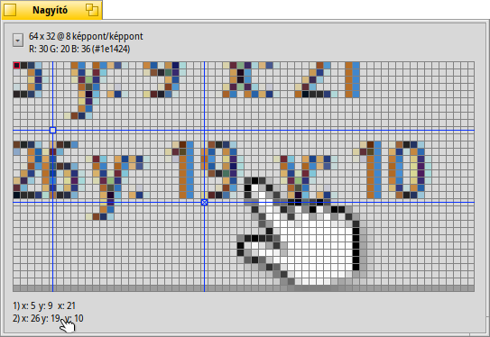

Nagyító (Magnify)
Nagyító (Magnify)
| Asztalsáv: | ||
| Útvonal: | /boot/system/apps/Magnify | |
| Beállítások: | ~/config/settings/Magnify_prefs |
A program az egér körüli területet nagyítja fel.
At the top you'll find the size and magnification level of the area. "64 x 32 @ 8 pixels/pixel" means that you look at a 64x32 pixel rectangle around your mouse pointer and every pixel is enlarged by a factor of 8.
Ez alatt a pirossal jelölt képpont színének kódját találjuk. Ennek a színnek mind az RGB, mind pedig a hexadecimális kódját látjuk.
A kijelölt képpont a ← / → / ↑ / ↓ billentyűkkel mozgatható.
Hogy megmérje a távolságokat két kék kereszt is a rendelkezésére áll, melyet az ALT H kombinációval adhatunk a képhez. Az ezek X/Y koordinátái a bal felső sarokban jelenik meg, ha mind a kettő kereszt hozzá van adva, akkor az egymás közti távolsága az ablak alján látható majd.
A keresztek mozgathatóak a ← / → / ↑ / ↓ billentyűkkel. Az aktív kereszt "x"-el van jelölve.
You can move the mouse pointer pixel by pixel with ALT ← / → / ↑ / ↓.
Clicking on the pop-up menu or right-clicking into the pixel grid gives you a number of options:
| ALT S | Saves the current display as a PNG image. | ||
| ALT C | A jelenlegi kép másolása a vágólapra. | ||
| ALT T | Shows additional information. | ||
| ALT H | Kereszt hozzáadása. | ||
| ALT SHIFT H | A legutóbbi hozzáadott kereszt eltávolítása. | ||
| ALT G | Shows a grid overlay. | ||
| ALT F | Stops updating the magnification area. | ||
| ALT I | A nagyított területet továbbra is frissíti, azonban nem követi az egér mozgását. | ||
| ALT / | Az ablak méretezése után visszaállítja a négyzet alakú képernyőt. | ||
| ALT - | Az egér körüli, nagyított terület méretének csökkentése. | ||
| ALT + | A nagyítandó terület méretének növelése. | ||
| ALT , | A nagyítás mértékének csökkentése. | ||
| ALT . | A nagyítás mértékének növelése. |